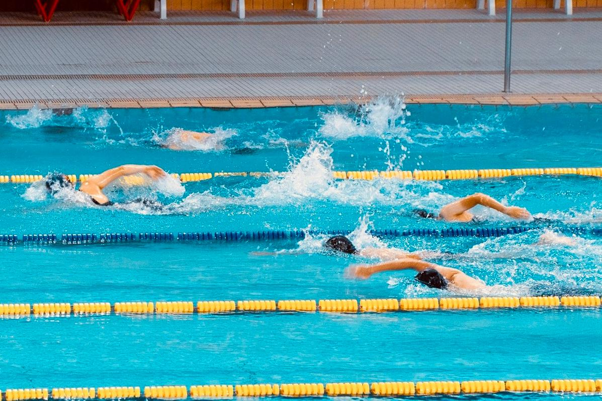
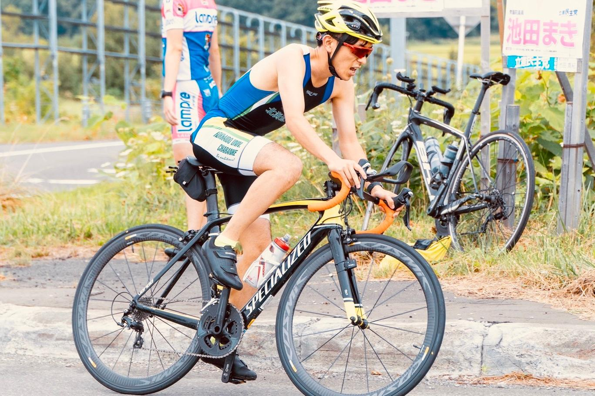
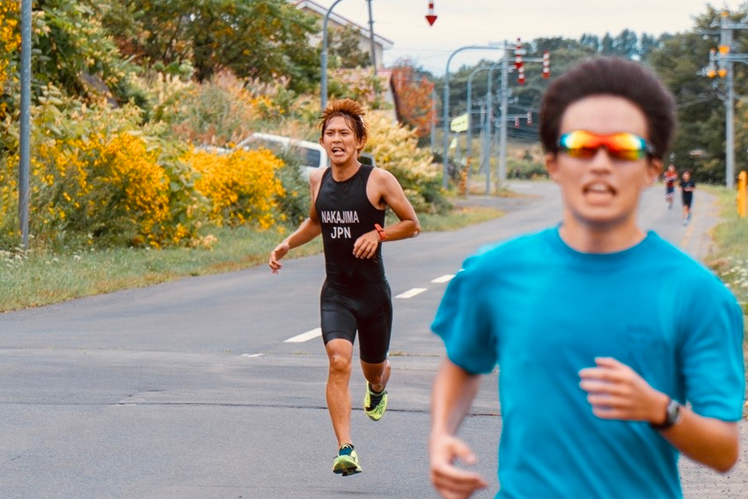

活動内容
-

SWIM
土 19:00~20:00
日 17:00~18:00場所はイトマンスイミングスクール札幌北口校。選手は全体練習の他にも、イトマンのアクアフリーを利用して毎日好きな日に練習することができる。
水泳未経験者からインハイ経験者まで、様々なレベルの選手が在籍している。 -

BIKE
主に休日午前中
バイク練習の場所は様々。休日の午前中に手稲山を上ったり、新港・高岡等の周回コースを走ることが多いが、ロングライドで旅に出かけることも。デュアスロン（バイク＆ラン）の練習も行う。
一年生の間は部のバイクを5000円で借りることができるので、お金を貯めて2年生から自分のバイクを購入する部員が多い。 -

RUN
火 18:15~20:00
木 18:15~20:00場所は北大メインストリート。体育館の前に集合する。初心者から長距離経験者まで、自分と近い実力の選手と練習する。北大駅伝や各種マラソンなどの大会に出場する選手も多い。